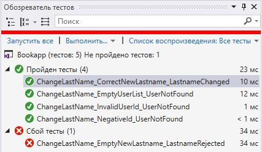
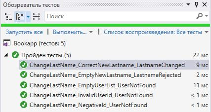

Тестирование ПО
Фреймворк модульного тестирования NUnit
Edward & Albert / github:Tgjmjgj
Содержание лекции
NUnit
Ну что же, пора добавить в наш курс немного практики.
Здесь будет рассматривать фреймворк NUnit версии 3.10.1.
NUnit
NUnit - фреймворк модульного тестирования для всех языков платформы .NET. Изначально был портирован с Java-фреймворка JUnit, но в настоящее время (релиз 3.10.1), был полностью переписан и приобрёл множество особенностей и фич.Официальный репозиторий
Проекты NUnit
Помимо самого фреймворка NUnit существуют много расширений, вот некоторые из них:
- NUnit Console and Engine - запуск юнит тестов через консоль, а также движок для запуска тестов другими раннерами.
- NUnit 3 Visual Studio Adapter - адаптер для запуска NUnit тестов из Visual Studio и из билдов VSTS/TFS.
- NUnit Visual Studio Templates - шаблоны для написания юнит-тестов в Visual Studio.
- Visual Studio Test Generator - генератор NUnit тестов в Visual Studio.
- NUnit GUI - запуск NUnit тестов через графическое приложение.
Инсталляция
Есть несколько способов поставить NUnit:
- Полная установка NUnit через NuGet
- Установка облегчённой NUnitLite версии через NuGet
- Скачивание Zip архива с официального сайта
Полная установка NUnit через NuGet
Нужно установить 3 пакета: NUnit - сам фреймворк, NUnit.Console - для возможности запуска через консоль и NUnit3TestAdapter - для запуска через Visual Studio.
Можно сделать это через GUI, а можно через Консоль Пакетного Менеджера:
Install-Package NUnit -Version 3.10.1 -Package < имя_тестовой_сборки >
Install-Package NUnit.Console -Version 3.8.0 -Package < имя_тестовой_сборки >
Install-Package NUnit3TestAdapter -Version 3.10.0 -Package < имя_тестовой_сборки >
Установка облегчённой NUnitLite версии через NuGet
Облегчённая версия NUnit содержит только основное ядро фреймворка и легковесный раннер. Такая конфигурация может потребоваться для тестирования компактных или встроенных систем.
Для установки требуется пакет NUnitLite:
Install-Package NUnitLite -Version 3.10.1 -Package < имя_тестовой_сборки >
Скачивание Zip архива с официального сайта
Скачайте архив с последним релизом NUnit из релизов GitHub. Разархивируйте в подходящую директорию и подключите к вашему тестовому проекту ссылку на nunit.framework.dll.
NUnit в белом ящике
Начиная с версии 3.10 вместе с фреймворком поставляется индексированный PDB файл для отладки внутреннего кода. Что позволяет самостоятельно отлаживать внутренний код NUnit. Вдруг пригодится.
Ну где уже тесты
Пора продемонстрировать юнит тесты в действии.
Тестируемый класс
public class User
{
public int id;
public string firstname;
public string lastname;
public string gender;
private DateTime birthday;
private string email;
private string address;
public User(int id, string fname, string lname, string g,
DateTime birth, string mail, string address)
{
this.id = id;
this.firstname = fname;
this.lastname = lname;
this.gender = g;
this.birthday = birth;
this.email = mail;
this.address = address;
}
}
public class UserControl
{
private List<User> users;
public UserControl(List<User> users)
{
this.users = users;
}
// ...
public bool ChangeLastname(int userId, string newLastname)
{
User user = users.Find(usr => usr.id == userId);
if (user != null)
{
user.lastname = newLastname;
return true;
}
return false;
}
// ...
}
Тестируем
Мы хотим протестировать метод ChangeLastname.
Для этого в тестовую сборку добавим ссылку на проект с кодом этого класса, и создадим тестовый класс.
Тест
using System;
using NUnit.Framework;
namespace Bookapp.Tests
{
[TestFixture]
public class UserControlTests
{
[Test]
public void ChangeLastName_CorrectNewLastname_LastnameChanged()
{
var list = new System.Collections.Generic.List<User>();
User u1 = new User(1, "Eugen", "Spreches", "Male",
new DateTime(1976, 10, 21), "eus113284@gmail.com",
"Russia, Belsk, st. Cherdjanova, 14, 331, b.2");
User u2 = new User(2, "Kevin", "Zurich", "Male",
new DateTime(1982, 3, 15), "dergrosser.ex@epost.de",
"Germany, Strig, st. Wainachtsstrase, 8, 23");
User u3 = new User(3, "Helen", "Jupiter", "Female",
new DateTime(1964, 11, 3), "helen.jupiter1964@gmail.com",
"Malaysia, Teluk Intan, st. Keram Adulati, 1, 24");
list.Add(u1);
list.Add(u2);
list.Add(u3);
string newLastname = "Kun Wai";
UserControl userControl = new UserControl(list);
bool result = userControl.ChangeLastname(3, newLastname);
Assert.IsTrue(result);
Assert.That(u3.lastname == newLastname);
}
}
}
Дополнительные тесты
Вот какую картину мы видим в Visual Studio:

Однако, всего одного теста недостаточно, чтобы убедиться в работоспособности этого метода. Попробуем дописать побольше тестов, чтобы охватить максимальное количество различных ситуаций.
Больше тестов
[Test]
public void ChangeLastName_InvalidUserId_UserNotFound()
{
var list = new System.Collections.Generic.List<User>();
User u1 = new User(1, "Eugen", "Spreches", "Male",
new DateTime(1976, 10, 21), "eus113284@gmail.com",
"Russia, Belsk, st. Cherdjanova, 14, 331, b.2");
User u2 = new User(2, "Kevin", "Zurich", "Male",
new DateTime(1982, 3, 15), "dergrosser.ex@epost.de",
"Germany, Strig, st. Wainachtsstrase, 8, 23");
User u3 = new User(3, "Helen", "Jupiter", "Female",
new DateTime(1964, 11, 3), "helen.jupiter1964@gmail.com",
"Malaysia, Teluk Intan, st. Keram Adulati, 1, 24");
list.Add(u1);
list.Add(u2);
list.Add(u3);
string newLastname = "Kun Wai";
UserControl userControl = new UserControl(list);
bool result = userControl.ChangeLastname(4, newLastname);
Assert.IsFalse(result);
Assert.IsNull(list.Find(usr => usr.lastname == newLastname));
}
[Test]
public void ChangeLastName_EmptyUserList_UserNotFound()
{
var list = new System.Collections.Generic.List<User>();
string newLastname = "Kun Wai";
UserControl userControl = new UserControl(list);
bool result = userControl.ChangeLastname(1, newLastname);
Assert.IsFalse(result);
Assert.Zero(list.Count);
}
[Test]
public void ChangeLastName_NegativeId_UserNotFound()
{
var list = new System.Collections.Generic.List<User>();
User u1 = new User(1, "Eugen", "Spreches", "Male",
new DateTime(1976, 10, 21), "eus113284@gmail.com",
"Russia, Belsk, st. Cherdjanova, 14, 331, b.2");
User u2 = new User(2, "Kevin", "Zurich", "Male",
new DateTime(1982, 3, 15), "dergrosser.ex@epost.de",
"Germany, Strig, st. Wainachtsstrase, 8, 23");
User u3 = new User(3, "Helen", "Jupiter", "Female",
new DateTime(1964, 11, 3), "helen.jupiter1964@gmail.com",
"Malaysia, Teluk Intan, st. Keram Adulati, 1, 24");
list.Add(u1);
list.Add(u2);
list.Add(u3);
string newLastname = "Kun Wai";
int searchId = -1;
UserControl userControl = new UserControl(list);
bool result = userControl.ChangeLastname(searchId, newLastname);
Assert.IsFalse(result);
Assert.IsNull(list.Find(usr => usr.lastname == newLastname));
}
[Test]
public void ChangeLastName_EmptyNewLastname_LastnameRejected()
{
var list = new System.Collections.Generic.List<User>();
User u1 = new User(1, "Eugen", "Spreches", "Male",
new DateTime(1976, 10, 21), "eus113284@gmail.com",
"Russia, Belsk, st. Cherdjanova, 14, 331, b.2");
User u2 = new User(2, "Kevin", "Zurich", "Male",
new DateTime(1982, 3, 15), "dergrosser.ex@epost.de",
"Germany, Strig, st. Wainachtsstrase, 8, 23");
User u3 = new User(3, "Helen", "Jupiter", "Female",
new DateTime(1964, 11, 3), "helen.jupiter1964@gmail.com",
"Malaysia, Teluk Intan, st. Keram Adulati, 1, 24");
list.Add(u1);
list.Add(u2);
list.Add(u3);
string newLastname = "";
UserControl userControl = new UserControl(list);
bool result = userControl.ChangeLastname(3, newLastname);
Assert.IsFalse(result);
Assert.IsNull(list.Find(usr => usr.lastname == newLastname));
}
Первый баг
Пробуем запустить все тесты, и что же мы видим?
Наш метод не отклоняет изменение фамилии на пустую строку!
Исправляем метод
public bool ChangeLastname(int userId, string newLastname)
{
if (newLastname == "" || newLastname == null)
return false;
User user = users.Find(usr => usr.id == userId);
if (user != null)
{
user.lastname = newLastname;
return true;
}
return false;
}
Результат
И - Вуаля! Теперь все тесты проходят успешно.
Структура NUnit фреймворка
Теперь самое время засунуть голову поглубже в NUnit, и детально изучить, какие же возможности он нам предоставляет.
Атрибуты
Уровни применения атрибутов
- Уровень сборки
- Уровень класса
- Уровень метода
Уровень метода имеет наивысший приоритет и перекрывает вышележащие уровни.
Атрибут Apartment
Определяет потоковое поведение тестов как COM объектов, может принимать 2 значения: STA и MTA.
Всё помеченное STA выполняется последовательно в одном потоке. MTA же может использоваться сразу несколькими потоками.
По умолчанию всегда применяется режим MTA, поэтому указывать его нет необходимости.
[assembly:Apartment(ApartmentState.STA)]
[TestFixture, Apartment(ApartmentState.STA)]
public class FixtureRequiringSTA
{
[Test, Apartment(ApartmentState.STA)]
public void TestRequiringSTA()
{
}
}
Атрибут Author
Добавляет информацию об авторе теста/тестового класса.
[TestFixture]
[Author("Jane Doe", "jane.doe@example.com")]
public class MyTests
{
[Test]
public void Test1() { /* ... */ }
[Test]
[Author("Joe Developer")]
public void Test2() { /* ... */ }
}
Атрибут Category
Атрибут позволяет группировать тесты и тестовые классы по различным категориям. Это позволяет выполнять тесты определённых категорий, или же наоборот, исключать из выполнения некоторые группы тестов.
namespace NUnit.Tests
{
using System;
using NUnit.Framework;
[TestFixture]
public class SuccessTests
{
[Test]
[Category("Long")]
public void VeryLongTest()
{ /* ... */ }
}
}
Атрибут Description
Позволяет добавить описание.
[assembly: Description("Assembly description here")]
namespace NUnit.Tests
{
using System;
using NUnit.Framework;
[TestFixture, Description("Fixture description here")]
public class SomeTests
{
[Test, Description("Test description here")]
public void OneTest()
{ /* ... */ }
}
}
Атрибут Ignore
Используется для обозначения того, что тест по некоторым причинам не должен исполняться. Например, если тест устарел.
namespace NUnit.Tests
{
using System;
using NUnit.Framework;
[TestFixture]
[Ignore("Ignore a fixture")]
public class SuccessTests
{
// ...
}
}
Атрибут MaxTime
Атрибут применим только на уровне тестов. Задаёт максимальное допустимое время выполнения теста в миллисекундах.
[Test, MaxTime(2000)]
public void TimedTest()
{
//...
}
Атрибуты SetUp TearDown
Атрибуты применяются внутри TextFixure для обозначения набора методов, выполняющихся перед выполнением каждого теста в этом же классе (SetUp) и после завершения (TearDown).
namespace NUnit.Tests
{
using System;
using NUnit.Framework;
[TestFixture]
public class SuccessTests
{
[SetUp] public void Init()
{ /* ... */ }
[TearDown] public void Cleanup()
{ /* ... */ }
[Test] public void Add()
{ /* ... */ }
}
}
Атрибут Test
Атрибут Test является одним из способов маркировки метода внутри TestFixure класса как теста. Тест может быть параметризированным.
Метод теста должен быть либо методом экземпляра или статическим методом.
Если метод теста возвращает результат, вы должны добавить к атрибуту параметр ExpectedResult для проверки результата. Также есть параметр Description - аналог одноимённого атрибута.
Атрибут Test 2
namespace NUnit.Tests
{
using System;
using NUnit.Framework;
[TestFixture]
public class SuccessTests
{
// Простейший тест
[Test]
public void Add()
{ /* ... */ }
// Тест со свойством Description
[Test(Description="My really cool test")]
public void Add()
{ /* ... */ }
// Простой асинхронный тест
[Test]
public async Task AddAsync()
{ /* ... */ }
// Тест с ожидаемым результатом
[Test(ExpectedResult = 4)]
public int TestAdd()
{
return 2 + 2;
}
// Асинхронный тест с ожидаемым результатом
[Test(ExpectedResult = 4)]
public async Task<int> TestAdd()
{
await //...
return 2 + 2;
}
}
}
Атрибут TestCase
Атрибут TestCase служит двум целям: помечает метод с параметрами как метод теста, и в то же время предоставляет данные для вызова этого метода.
[TestCase(12, 3, 4)]
[TestCase(12, 2, 6)]
[TestCase(12, 4, 3)]
public void DivideTest(int n, int d, int q)
{
Assert.AreEqual(q, n / d);
}
Для данного атрибута существует множество параметров, являющихся аналогами других атрибутов, например ExpectedResult.
[TestCase(12, 3, ExpectedResult=4)]
[TestCase(12, 2, ExpectedResult=6)]
[TestCase(12, 4, ExpectedResult=3)]
public int DivideTest(int n, int d)
{
return n / d;
}
Атрибут TestFixure
Этот атрибут помечает класс, как содержащий тесты класс. Не рекомендуется производить какие-либо действия в конструкторе такого класса.
namespace NUnit.Tests
{
using System;
using NUnit.Framework;
[TestFixture]
public class SuccessTests
{
// ...
}
}
Также стоит отметить, что атрибут TestFixure наследуется вместе с классом.
Атрибут TestFixure 2
Атрибут TestFixure может быть параметризированным. В этом случае значения параметров передаются как аргументы конструктора класса. Если подходящего конструктора нет, TestFixure игнорируется. Параметризированных TestFixure может быть несколько, по аналогии с атрибутами TesCase.
[TestFixture("hello", "hello", "goodbye")]
[TestFixture("zip", "zip")]
[TestFixture(42, 42, 99)]
public class ParameterizedTestFixture
{
private string eq1;
private string eq2;
private string neq;
public ParameterizedTestFixture(string eq1, string eq2, string neq)
{
this.eq1 = eq1;
this.eq2 = eq2;
this.neq = neq;
}
public ParameterizedTestFixture(string eq1, string eq2)
: this(eq1, eq2, null) { }
public ParameterizedTestFixture(int eq1, int eq2, int neq)
{
this.eq1 = eq1.ToString();
this.eq2 = eq2.ToString();
this.neq = neq.ToString();
}
[Test]
public void TestEquality()
{
Assert.AreEqual(eq1, eq2);
if (eq1 != null && eq2 != null)
Assert.AreEqual(eq1.GetHashCode(), eq2.GetHashCode());
}
[Test]
public void TestInequality()
{
Assert.AreNotEqual(eq1, neq);
if (eq1 != null && neq != null)
Assert.AreNotEqual(eq1.GetHashCode(), neq.GetHashCode());
}
}
Атрибут TestFixure 3
А ещё TestFixure может применяться для обобщённого класса. В этом случае в качестве параметров атрибута передаются подстановочные типы для класса.
[TestFixture(typeof(ArrayList))]
[TestFixture(typeof(List))]
public class IList_Tests where TList : IList, new()
{
private IList list;
[SetUp]
public void CreateList()
{
this.list = new TList();
}
[Test]
public void CanAddToList()
{
list.Add(1); list.Add(2); list.Add(3);
Assert.AreEqual(3, list.Count);
}
}
...и многие другие
Весь перечень атрибутов можно изучить в официальной документации NUnit.
А с нас пока хватит атрибутов.
Ведь впереди нас ждут...
Assertion - утверждения
Утверждения занимают ключевое место в любом xUnit-подобном фреймворке, и NUnit не исключение. NUnit предоставляет богатый набор утверждений, собранных в качестве статических методов в классе Assert.
Если утверждение не выполняется, тест считается упавшим.
Каждый метод Assert-а может быть вызван без сообщения, с простым текстовым сообщением, или параметризированным сообщением.
Модели утверждений
Начиная с NUnit версии 3.0, фреймворк поддерживает две модели утверждений:
- Классическую модель
- Модель ограничений
Классическая модель
В классической модели всё просто - классы Assert содержат значительный набор вспомогательных методов для построения разнообразных утверждений.
Простейший пример:
StringAssert.AreEqualIgnoringCase("Hello", myString);
Существует несколько классов для разных Assert-ов:
- Assert - базовая функциональность
- StringAssert - утверждения для строк
- CollectionAssert - утверждения для коллекций
- FileAssert - утверждения для файлов
- DirectoryAssert - утверждения для директорий
Список Assert-ов
| Assert.True | - равно true |
| Assert.False | - равно false |
| Assert.Null | - равно null |
| Assert.NotNull | - не равно null |
| Assert.Zero | - равно 0 (для чисел) |
| Assert.NotZero | - не равно 0 |
| Assert.IsNaN | - равно NaN (для Double) |
| Assert.IsEmpty | - пустое (строки и коллекции) |
| Assert.IsNotEmpty | - не пустое |
| Assert.AreEqual | - два значения равны (метод Equals) |
| Assert.AreNotEqual | - два значения не равны |
| Assert.AreSame | - ссылаются на один объект |
| Assert.AreNotSame | - ссылаются на разные объекты |
Список Assert-ов 2
| Assert.Contains | - содержится в коллекции |
| Assert.Greater | - больше заданной величины |
| Assert.GreaterOrEqual | - больше или равно |
| Assert.Less | - меньше |
| Assert.LessOrEqual | - меньше или равно |
| Assert.Positive | - положительное (число) |
| Assert.Negative | - отрицательное |
| Assert.IsInstanceOf | - является экземпляром указанного типа |
| Assert.IsNotInstanceOf | - не является экземпляром |
| Assert.IsAssignableFrom | - объекту можно присвоить указанный тип |
| Assert.IsNotAssignableFrom | - объекту нельзя присвоить указанный тип |
Список Assert-ов 3
| Assert.Throws | - метод должен вернуть строго определённое исключение |
| Assert.ThrowsAsync | - то же самое для асинхронного метода |
| Assert.DoesNotThrow | - метод не должен генерировать исключения |
| Assert.DoesNotThrowAsync | - то же самое для асинхронного метода |
| Assert.Catch | - аналогично Throws, но допускает производные исключения |
| Assert.CatchAsync | - догадайтесь |
| Assert.Pass | - принудительное успешное прохождение теста |
| Assert.Fail | - принудительный провал теста |
| Assert.Ignore | - остановка и игнорирование этого теста |
| Assert.Inconclusive | - когда входные данные не удовлетворяют потребностям теста |
Список StringAssert-ов
| StringAssert.Contains | - подстрока содержится в строке |
| StringAssert.DoesNotContain | - не содержится |
| StartsWith | - строка начинается с подстроки |
| DoesNotStartsWith | - не начинается |
| StringAssert.EndsWith | - заканчивается на |
| StringAssert.DoesNotEndWith | - не заканчивается |
| StringAssert.AreEqualIgnoringCase | - строки равны без учёта регистра |
| StringAssert.AreNotEqualIgnoringCase | - не равны |
| StringAssert.IsMatch | - соответствует регулярному выражению |
| StringAssert.DoesNotMatch | - не соответствует |
Список CollectionAssert-ов
| .AllItemsAreInstancesOfType | - все элементы экземпляры определённого типа |
| .AllItemAreNotNull | - ни один из элементов не равен null |
| .AllItemAreUnique | - все элементы разные |
| .AreEqual | - две коллекции содержат одинаковые элементы |
| .AreEquivalent | - две коллекции содержат одинаковые элементы в одинаковом порядке |
| .Contains | - коллекция содержит определённый элемент |
| .AreNotContain | - не содержит |
Список CollectionAssert-ов
| CollectionAssert.IsSubsetOf | - коллекция является подмножеством другой коллекции |
| CollectionAssert.IsNotSubsetOf | - коллекция не является подмножеством другой коллекции |
| CollectionAssert.IsEmpty | - коллекция пуста |
| CollectionAssert.IsNotEmpty | - коллекция не пустая |
| CollectionAssert.IsOrdered | - коллекция отсортирована |
Модель ограничений
Модель ограничений в основном использует всего один метод - Assert.That, которому передаются разнообразнейшие аргументы, называющиеся Ограничениями. Модель привносит необычайную гибкость в механизм утверждений.
Сразу посмотрим на пример:
int[] array = new int[] { 1, 2, 3 };
Assert.That(array, Has.Exactly(1).EqualTo(3));
Assert.That(array, Has.Exactly(2).GreaterThan(1));
Assert.That(array, Has.Exactly(3).LessThan(100));
Такие утверждения задать с помощью Классической модели просто невозможно.
Эквивалентные записи разными моделями:
Assert.AreEqual(4, 2 + 2);
Assert.That(2 + 2, Is.EqualTo(4));
Принципы модели ограничений
Модель ограничений приносит единую форму записи для всех утверждений. Первым аргументом передаётся объект, над которым прописывается утверждение, а вторым параметром - накладываемые на него ограничения.
Assert.That(myString, Is.EqualTo("Hello"));
// аналогично
Assert.That(myString, new EqualConstraint("Hello"));
В новой модели также существует возможность создания пользовательских ограничений.
Классы хелперы
Для упрощения синтаксиса ограничению существует набор классов хелперов:
- It - наиболее абстрактные ограничения на соответствие объекта чему-либо
- Does - ограничения на соответствие объекта каким-либо ожиданиям
- Contains - ограничения на содержание в объекте чего-либо
- Has - ограничения на наличие у объекта каких-либо параметров
- List - ограничения, специфичные для коллекций
- Throws - ограничения, связанные с исключениями
Гиб-б-бкость
Модель ограничений предоставляет настолько мощный и гибкий механизм создания утверждений, что рассмотреть их полностью вряд ли возможно - варианты комбинаций ограничений просто бесконечны.
Assert.That(array,
Has.Length.InRange(1, 10)
.And.Ordered.Ascending.After(1000).MilliSeconds
.And.All.InstanceOf(typeof(int))
.And.Some.Not.Zero
.And.Exactly(1).GreaterThan(2)
.Or.Negative
);
Предупреждения
В NUnit существует ещё такая штука как предупреждения. С помощью этого механизма можно создавать предупредительные сообщения в определённых ситуациях в коде теста, при этом продолжая его выполнение.
Для создания предупреждений используется класс Warn и метод Assert.Warn.
// Использование Warn с условием отрицания
Warn.If(2 + 2 != 5);
Warn.If(2 + 2, Is.Not.EqualTo(5));
Warn.If(() => 2 + 2, Is.Not.EqualTo(5).After(3000));
// Использование Warn с прямым условием
Warn.Unless(2 + 2 == 5);
Warn.Unless(2 + 2, Is.EqualTo(5));
Warn.Unless(() => 2 + 2, Is.EqualTo(5).After(3000));
// Выдать предупреждение
Assert.Warn("Warning message");
Примеры тестов
Примеры тестов можно найти вот здесь .